Von Telawi weiter nach Signagi, der „Stadt der Liebe“ auf dem Hügel über dem Alasani-Tal, anschließend Khinkali-Kochkurs.
Signagi: Auf einem Bergsporn über dem Alasani-Tal gelegen, mit Blick bis zu den schneebedeckten Gipfeln des Großen Kaukasus – bei guter Sicht angeblich bis nach Russland hinein. Die Stadtmauer mit ihren 23 Wehrtürmen wurde 1762 unter König Erekle II. errichtet, ursprünglich als Schutz vor Einfällen dagestanischer Bergstämme aus dem Norden. Signagi vermarktet sich heute als „Stadt der Liebe“: Das Standesamt hat rund um die Uhr geöffnet, auch für ausländische Paare – ein findiger Fremdenverkehrs-Slogan, dem das kleine Kachetien-Städtchen seinen heutigen Ruf größtenteils verdankt.
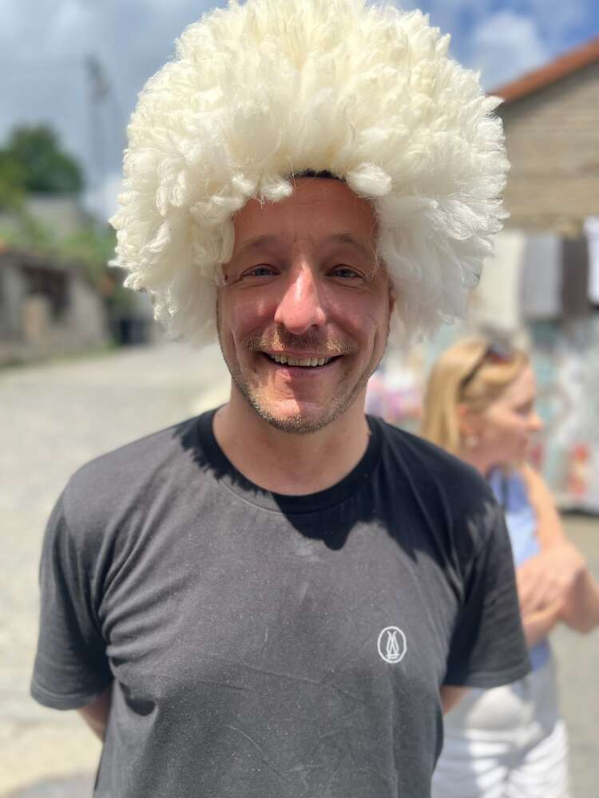
Eines der sieben Stadttore in der 4,5 km langen Wehrmauer – dahinter die ersten Souvenirstände mit Textilien und Handwerkskunst, ein fließender Übergang von Festungsanlage zu Fußgängerzone.

Der begehbare Wehrgang entlang der Stadtmauer – von hier oben reicht der Blick weit über das Alasani-Tal. Von den ursprünglich 23 Türmen sind die meisten bis heute erhalten und teilweise restauriert.

Blick auf einen der Wehrtürme und den Kirchturm im Zentrum – davor ein Stand mit bestickten Tischdecken und Schals, wie sie überall in der Altstadt zu finden sind.
Kriegerdenkmal: In einem kleinen Park hinter dem Nationalmuseum erstreckt sich eine gut 20 Meter lange Reliefwand zum Gedenken an die gefallenen georgischen Soldaten der Roten Armee im Zweiten Weltkrieg, daneben lange Namenslisten der Gefallenen aus den umliegenden Dörfern. Eine der wenigen Stellen in Signagi, die nicht auf Romantik, sondern auf die Kriegsgeschichte des Landes verweist.

Ausschnitt der Reliefwand: berittene Soldaten, dazwischen in Stein gemeißelte Namenslisten der Gefallenen aus den Dörfern der Umgebung.

Klassisches Souvenirfoto: weißer, flauschiger Schafwollhut vom Marktstand aufgesetzt – ein bisschen albern, aber genau deswegen Pflichtprogramm.
Khinkali: Georgiens bekannteste Teigtasche, ursprünglich aus den Bergregionen Chewsuretien und Pschawi im Norden des Landes, wo sie als deftige, gut transportable Mahlzeit für Hirten und Reisende diente. Gefüllt werden sie meist mit gewürztem Hackfleisch (Rind, Schwein oder eine Mischung) und reichlich Brühe, die beim Kochen im Teig eingeschlossen bleibt – weshalb Khinkali traditionell mit den Händen gegessen werden: am geriffelten „Griff“ oben anfassen, vorsichtig anbeißen, die Brühe schlürfen, erst dann den Rest essen. Der Teigknoten selbst gilt als unhöflich zum Verzehr und bleibt traditionell auf dem Teller liegen – die Anzahl der liegengebliebenen Knoten gilt scherzhaft als Zähleinheit für die verspeisten Khinkali.
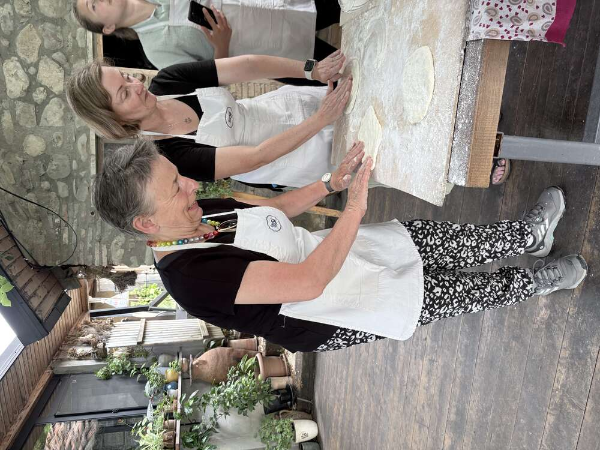
Die charakteristischen Falten entstehen durch Zusammendrücken des Teigrands von außen nach innen – ein gut gefaltetes Khinkali hat traditionell 18 bis 20 Falten, gezählt wird in vielen georgischen Familien tatsächlich.

Vorbereitung des Teigs: dünn ausgerollte Kreise, die anschließend mit der Fleischfüllung bestrichen und zu den charakteristischen Bündeln geschlossen werden.

Die gesamte Reisegruppe mit Schürze unterm Nussbaum – gemeinsames Kochen als einer der geselligsten Programmpunkte der ganzen Reise.
Tiflis: Nach dem Grenzübertritt und der Weinregion Kachetien der Ankunftspunkt der Reise – eine Stadt, die der Legende nach von König Wachtang Gorgassali im 5. Jahrhundert gegründet wurde, als sein Falke bei der Jagd in eine heiße Schwefelquelle stürzte. „Tbili“ bedeutet „warm“ – daher der Name. Perser, Byzantiner, Araber, Mongolen und Russen haben hier alle Spuren hinterlassen, was der Altstadt bis heute ihren vielschichtigen Charakter verleiht.
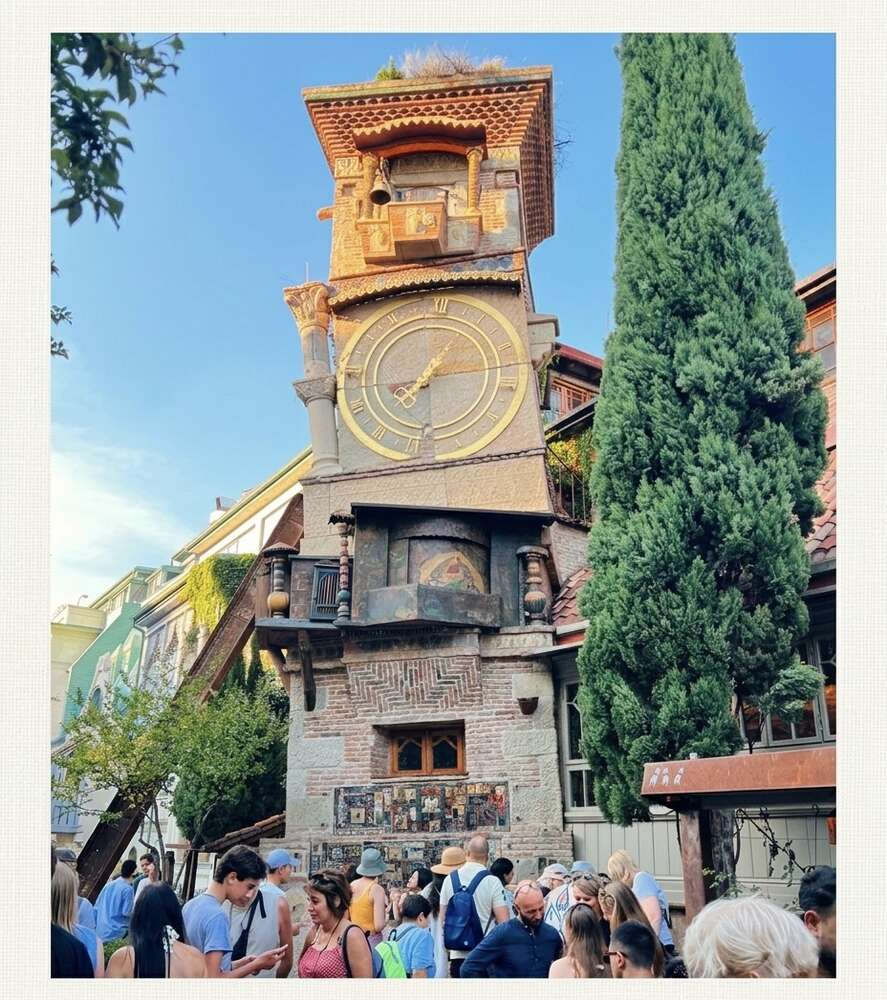
Der schiefe Uhrturm des Marionettentheaters von Rezo Gabriadze – kein historisches Bauwerk, sondern erst 2010 vom Puppenspieler selbst entworfen und bewusst schräg gebaut, als stilisierte Hommage an die windschiefen Altstadthäuser ringsum. Jede volle Stunde tritt ein Engel aus einer kleinen Tür und schlägt mit einem Hammer die Glocke; mittags und um 19 Uhr zeigt ein Mechanismus das Puppenspiel „Der Kreislauf des Lebens“.
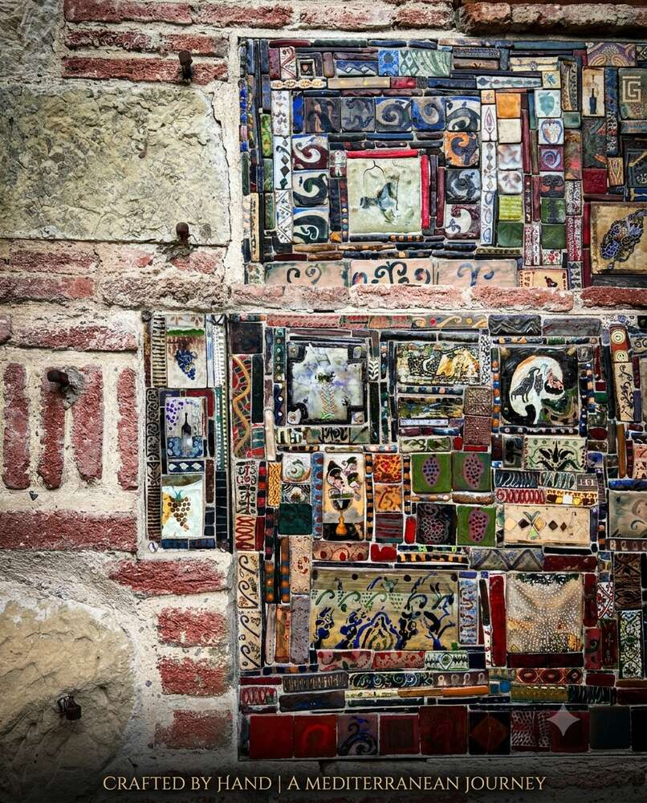
Am Sockel des Uhrturms: ein von Gabriadze selbst handbemaltes Keramikmosaik aus lauter kleinen Einzelfliesen – Trauben, Tiere, Ornamente, jede Kachel ein eigenes kleines Bild. Genau diese verspielte, handwerkliche Detailarbeit macht den Turm zu mehr als nur einer Kuriosität.
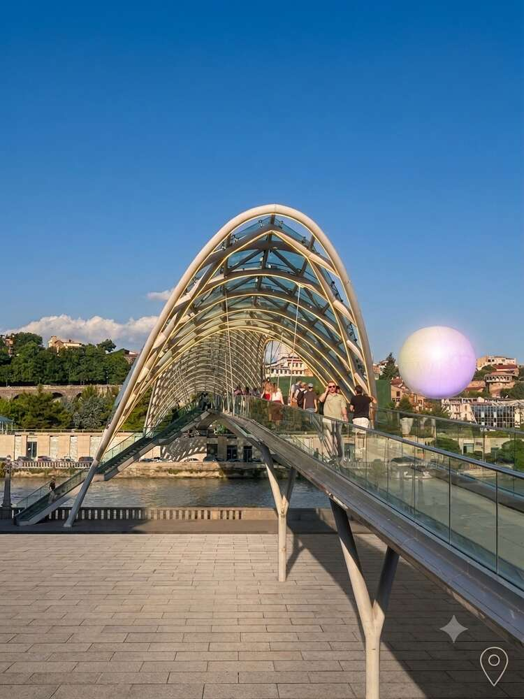
Die Friedensbrücke (2010, italienischer Architekt Michele De Lucchi) über den Mtkwari – als Versöhnungsgeste nach dem georgisch-russischen Krieg 2008 initiiert von Präsident Saakaschwili. Rund 30.000 LEDs übertragen abends verschlüsselte Lichtbotschaften in Morsecode, die die im menschlichen Körper vorkommenden chemischen Elemente codieren – Symbolik dafür, dass letztlich alle Menschen aus denselben Bausteinen bestehen. Bei den Einheimischen trägt sie wegen ihrer Form den spöttischen Spitznamen „Always Ultra“.
Altstadtkirchen: Mehrere Kirchen der Altstadt zeigen bis heute gut erhaltene Innenfresken, klassisch mit Goldgrund und byzantinisch beeinflusster Bildsprache.
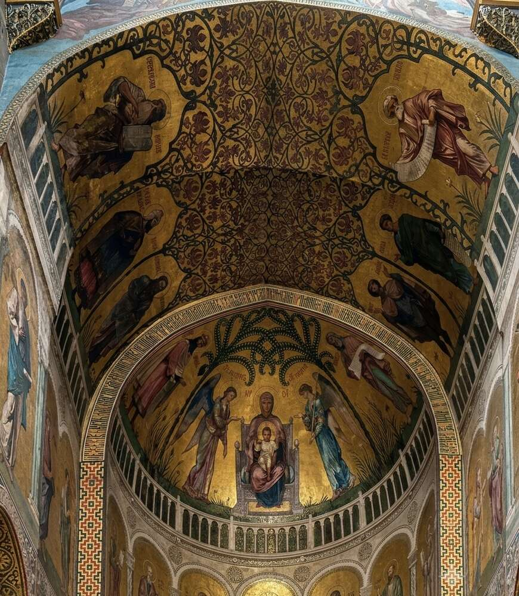
Apsisfresko mit der thronenden Gottesmutter, flankiert von Engeln – klassische Deesis-Anordnung mit Goldgrund und floralen Rankenornamenten im Gewölbe.
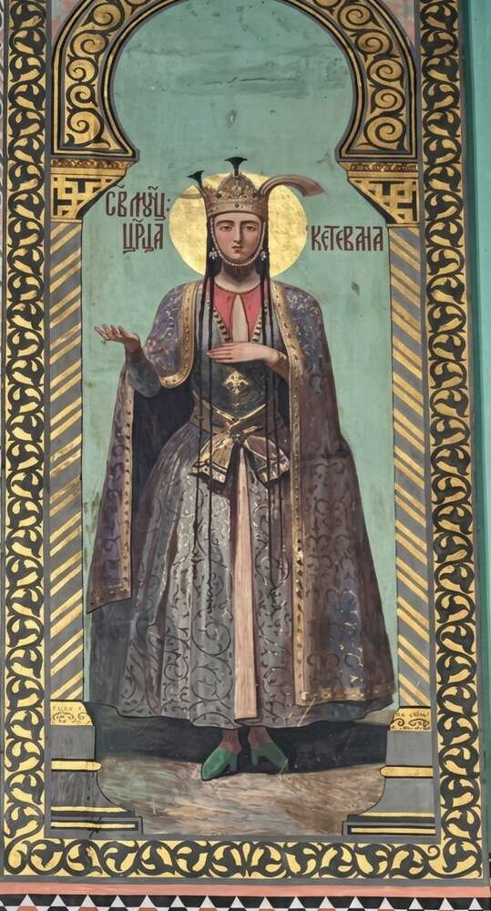
Die heilige Königin Ketevan von Kachetien (um 1560–1624) – sie ging 1614 als freiwillige Geisel in persische Gefangenschaft, um einen Angriff auf ihr Land abzuwenden, und wurde 1624 zu Tode gefoltert, weil sie sich weigerte, zum Islam zu konvertieren. Ihre Reliquien liegen bis heute unter dem Altar der Kathedrale von Alaverdi, nicht weit von der Route der vergangenen Tage entfernt. Ein Teil ihres Armes gelangte im 17. Jahrhundert über portugiesische Mönche nach Goa in Indien und wurde erst 2021 an Georgien zurückgegeben.

Christus Pantokrator in der Kuppel, umgeben von einem tiefblauen, sterngesprenkelten Gewölbe – eine der eindrücklichsten Kombinationen aus Ikonenmalerei und dekorativer Ornamentik in der Tifliser Altstadt.
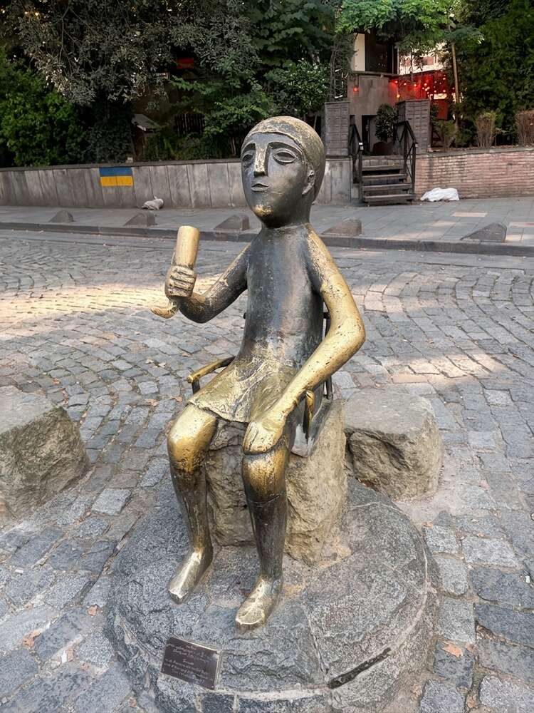
Eine der zahlreichen kleinen Bronzefiguren, die in der Altstadt verteilt zum Verweilen einladen – hier ein Junge, lässig auf einem Stein sitzend. Tiflis hat ein Faible für genau solche unaufdringlichen, humorvollen Alltagsskulpturen im Straßenbild.
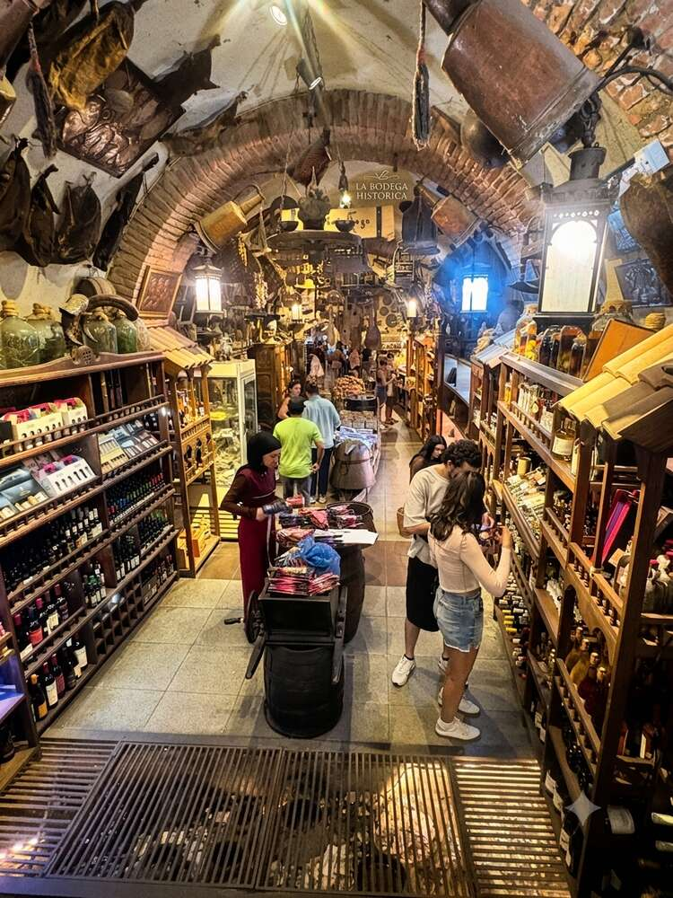
„La Bodega Historica“: ein Weinladen im Gewölbekeller, vollgestopft mit Flaschen, historischen Geräten und Kuriositäten – halb Laden, halb kleines Museum. Solche Keller prägen das Bild der Altstadtgassen rund um die Leselidse-Straße.
Souvenirs mit Substanz: Neben Wein und Magneten führt die Altstadt auch handwerklich anspruchsvollere Andenken im Angebot – Ikonenmalerei und Aquarellkunst, die weit über das übliche Kuppel-Kitsch-Regal hinausgehen.

Handgemalte Ikone des Heiligen Gabriel in georgisch-orthodoxer Tradition – Goldgrund, Blattgold-Nimbus, altgeorgische Beschriftung. Ikonenmalerei ist in Georgien bis heute lebendiges Handwerk, keine reine Museumskunst.
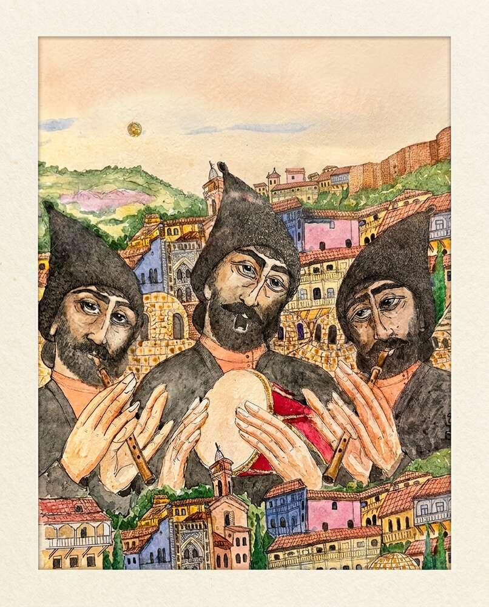
Aquarellillustration dreier Musiker mit Duduk und Doli-Trommel vor der Kulisse der Tifliser Altstadt und der Stadtmauer im Hintergrund – ein kleines, mitgebrachtes Stück Lokalkolorit abseits der Standard-Postkarte.
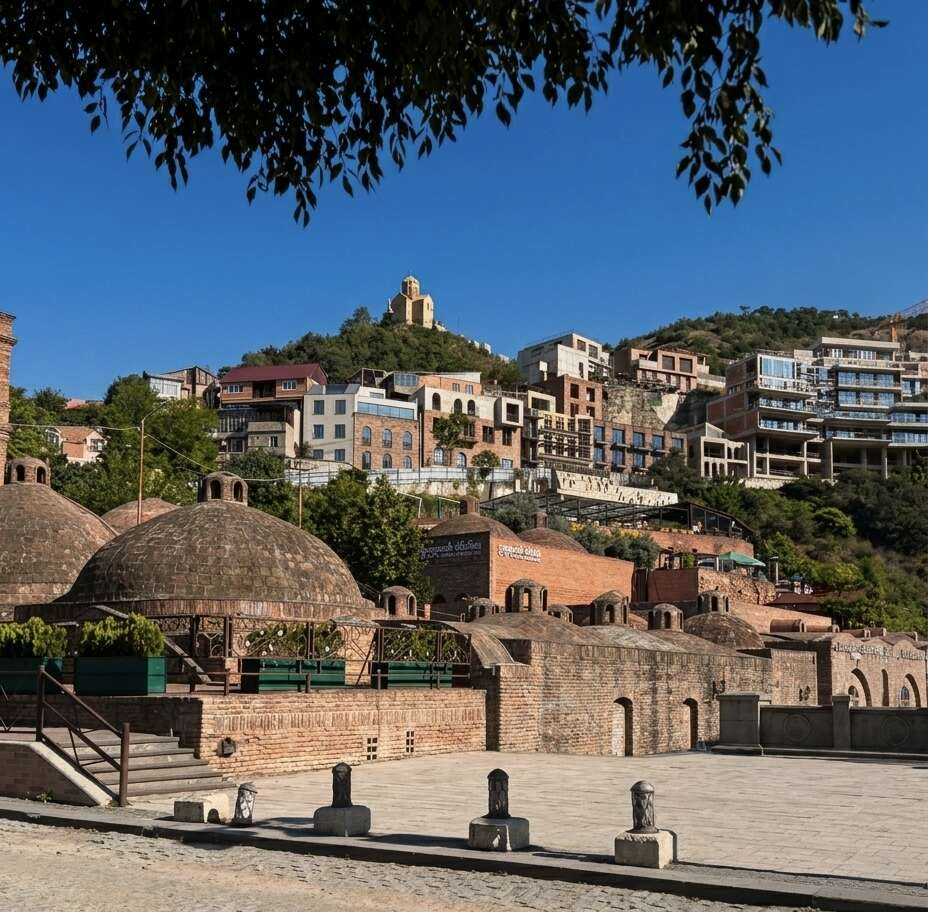
Die charakteristischen Backsteinkuppeln der Schwefelbäder im Viertel Abanotubani – hier soll der Legende nach der verletzte Falke König Wachtangs in die heiße Quelle gestürzt sein. Die Bäder sind seit mindestens dem 5. Jahrhundert in Betrieb; schon Alexandre Dumas und der Dichter Puschkin badeten hier.

Blick zur Festung Narikala (3./4. Jahrhundert, pers.-sassanidisch gegründet) hoch über der Altstadt, samt Seilbahn vom Rike-Park. Der Name stammt aus dem Persischen und bedeutet „uneinnehmbare Burg“ – auf Georgisch hieß sie ursprünglich „Festung des Neides“. Ein Blitzschlag zerstörte 1827 das Pulvermagazin und große Teile der Anlage, seitdem ist sie größtenteils Ruine, aber frei zugänglich.
Straßenkunst: Zwischen den historischen Motiven überrascht die Altstadt immer wieder mit Alltagshumor – etwa ein ausrangierter Kleintransporter, komplett zur rollenden Blumenkiste umfunktioniert und mit einer kleinen Wandmalerei bemalt.
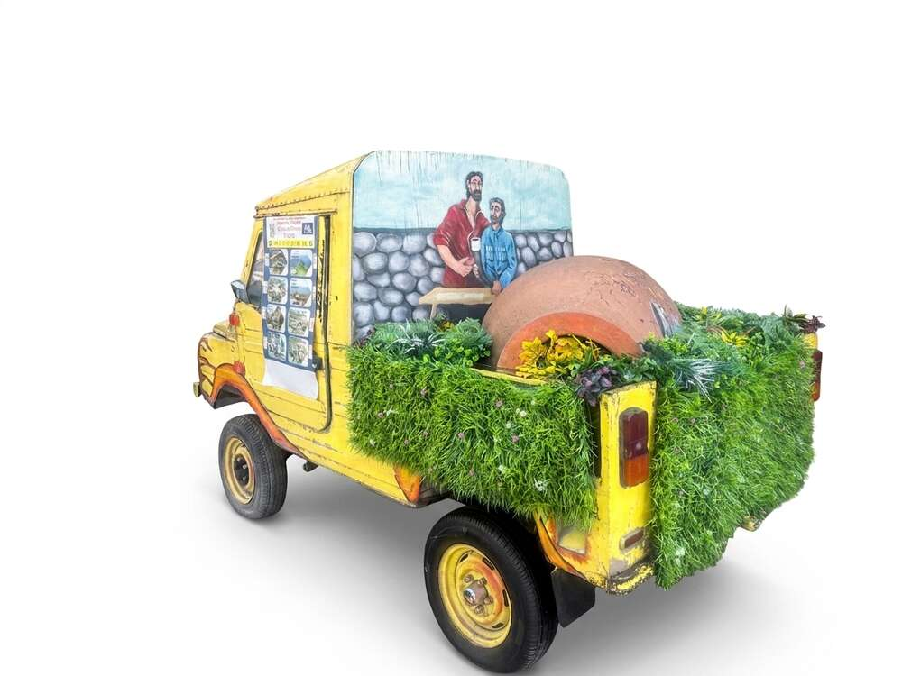
Kunst trifft Recycling: ein alter Kleintransporter, dessen Ladefläche komplett begrünt wurde – ein kleines, liebevoll gepflegtes Detail am Rand der Altstadtgassen.